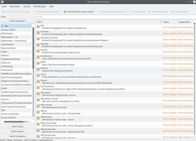
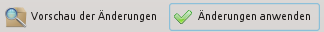
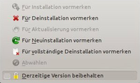

Muon Paketverwaltung
Dieser Artikel wurde für die folgenden Ubuntu-Versionen getestet:
Ubuntu 16.04 Xenial Xerus
Ubuntu 14.04 Trusty Tahr
Zum Verständnis dieses Artikels sind folgende Seiten hilfreich:
Muon  ist die erweiterte Paketverwaltung für Kubuntu und ergänzt damit Plasma Discover. Muon zeichnet sich durch eine übersichtliche Oberfläche aus und bietet durch umfangreiche Filteroptionen sowie vielen Informationen zu einzelnen Paketen einen guten Überblick. Es ist damit das KDE-Pendant zu Synaptic.
ist die erweiterte Paketverwaltung für Kubuntu und ergänzt damit Plasma Discover. Muon zeichnet sich durch eine übersichtliche Oberfläche aus und bietet durch umfangreiche Filteroptionen sowie vielen Informationen zu einzelnen Paketen einen guten Überblick. Es ist damit das KDE-Pendant zu Synaptic.
Ein Teil der Programmoptionen:
Filter (Filteroptionen können nicht für eine spätere Verwendung gespeichert werden)
Nach Kategorien
Installierte/Nicht installierte Pakete
Nach übrig gebliebenen Konfigurationsdateien
Informationen
Beschreibungen zu Paketen
Technische Details
Abhängigkeit zu anderen Paketen
Andere Pakete die von diesem Paket abhängen
Liste der Dateien, die in einem installierten Paket enthalten sind
Neben der hier beschriebenen Muon-Paketverwaltung gibt es auch noch das Programm Plasma Discover, mit welchem man auf einfache Weise Software installieren und entfernen kann. Weitere Informationen zur Softwareverwaltung unter Kubuntu: Softwareverwaltung KDE
Es ist erst ab Version 1.4.0 möglich einen Proxyserver für lokale Paketquellen einzustellen (s.a. Fehlerbericht) (Status: behoben).
Installation¶
Muon ist standardmäßig nicht in Kubuntu enthalten, man kann es aber einfach installieren [1]:
muon
 mit apturl
mit apturl
Paketliste zum Kopieren:
sudo apt-get install muon
sudo aptitude install muon
Bedienung¶
Die Paketverwaltung Muon findet sich im Menü unter "Anwendungen -> System -> Paketverwaltung Muon" [2].
Übersicht¶
|  |
| Paketverwaltung muon |
Muon teil sich grob in drei Bereiche auf:
Filter¶
Auf der linken Seite lässt sich die Paketliste nach bestimmten Kriterien Filtern.
"Nach Kategorie": Unterschiedliche Bereiche, denen ein Paket zugeordnet ist
"Nach Status": Zeigt zum Beispiel alle installierten, aktualisierbaren, defekten Pakete an, oder Pakte deren Konfigurationsdateien nach einer Entfernung noch vorhanden sind.
"Nach Ursprung": Zeigt alle Pakete die zu einer Quelle gehören an. Neben den offiziellen Ubuntuquellen kann auch nach Fremdquellen (z.B. PPAs) gefiltert werden
Die einzelnen Filter werden per UND verknüpft. So ist es möglich alle Pakete "Nach Kategorie: Multimedia" UND "Nach Status: Installiert" UND "Nach Urspung: Ubuntu" anzeigen zu lassen. Findet man ein Paket nicht in der Liste, sollte man alle Filtereinstellungen noch einmal überprüfen.
Paketliste¶
Rechts werden alle zum Filter gefundenen Pakete angezeigt. Zudem gibt es oberhalb der Paketliste ein Suchfeld, um innerhalb der gefundenen Pakete zu suchen. Die Suche wird auf den Paketnamen, der Kurzbeschreibung und der Beschreibung des Paketes angewandt. Dies kann dazu führen, dass Paketnamen aufgelistet werden, die nicht mit dem Suchstring übereinstimmen: Wenn der Suchstring in der Beschreibung zum Paket enthalten ist, aber nicht im Paketnamen.
Informationen zu den Paketen¶
Unten findet man weitere Reiter, die Informationen zu einem markierten Paket anzeigen. Je nach dem, ob ein Paket installiert ist oder nicht, sind unterschiedliche Informationen vorhanden. So ist bei installierten Paketen ein zusätzlicher Reiter "Installierte Dateien" vorhanden.
Paket(e) installieren/entfernen¶
 Grundsätzlich werden Pakete in Muon zur Installation oder Entfernung erst einmal markiert. Erst über den Schalter "Änderungen anwenden" werden die Änderungen übernommen.
Um Pakete zur Installation bzw. Entfernung zu markieren, bieten sich zwei Wege an:
Im Reiter "Details" unter der Paketliste findet sich der entsprechenden Schalter
Über das Kontextmenü, welches per
 auf ein Paket geöffnet wird
auf ein Paket geöffnet wird
Durch  auf "Vorschau der Änderungen" kann man sich einen Überblick über die anstehenden Änderungen verschaffen. So sieht man schnell, ob ein Paket bei der Installation viele andere Pakete als Abhängigkeiten oder als Empfohlene Pakete mit installiert. Hier lassen sich noch diverse Korrekturen vornehmen. Erst durch einen Klick auf "Änderungen anwenden" beginnt die Installation/Entfernung.
auf "Vorschau der Änderungen" kann man sich einen Überblick über die anstehenden Änderungen verschaffen. So sieht man schnell, ob ein Paket bei der Installation viele andere Pakete als Abhängigkeiten oder als Empfohlene Pakete mit installiert. Hier lassen sich noch diverse Korrekturen vornehmen. Erst durch einen Klick auf "Änderungen anwenden" beginnt die Installation/Entfernung.
Versionen sperren¶
|  |
| Version sperren |
Möchte man ein bestimmtes Paket nicht aktualisieren, kann man die Version sperren.
Dazu öffnet man das Kontextmenü () über dem installierten Paket und klickt die Option
"Derzeitige Version beibehalten" an. Nach Eingabe des Passwortes wird im Verzeichnis /etc/apt/preferences.d/ eine entsprechende Datei angelegt.
Ausführlich wird dieses „Pinning“ genannte Verfahren im Artikel Apt-Pinning erklärt.
Aktualisierungen¶
Sind Aktualisierungen zu einem oder mehreren Paketen vorhanden, erscheint in der Kontrollleiste nebenstehendes Symbol. Ein Klick darauf startet die Aktualisierungsverwaltung von Muon und alle aktualisierbaren Pakete werden in einer Liste angezeigt. Auch hier werden die Änderungen erst nach auf "Änderungen anwenden" durchgeführt.
Paketquellen einrichten¶
Über den Menüpunkt "Einstellungen -> Software-Quellen einrichten" gelangt man zu den Einstellungen der Paketquellen. Nach einer Änderung sollte man Muon neu starten (siehe Probleme).
Tipps¶
Vorhandene Pakete auf weitere Rechner installieren¶
Möchte man auf mehreren Rechnern die gleichen Programme verwenden, so stellt Muon die Menüpunkte
"Datei -> Liste der herunterzuladenden Pakete speichern ...
"Datei -> Pakete mit Hilfe einer Liste herunterladen"
zur Verfügung. Den ersten Punkt startet man auf dem Quellrechner, den zweiten auf dem Zielrechner. So hat man auf zwei (oder mehreren) Rechnern die gleichen Pakete installiert.
Verlauf¶
Über "Ansicht -> Verlauf" oder Strg + H lassen sich alle Installationen und Entfernungen einsehen. Diese Liste ist nach Datum sortiert, so dass man auch detaillierte Einsicht auf die letzten Aktualisierungen erhält.
Links¶
Intern¶
Softwareverwaltung KDE -
 Übersicht über die Programmverwaltung mit KDE
Übersicht über die Programmverwaltung mit KDEPaketverwaltung -
Übersicht und Grundlagen der PaketverwaltungPlasma Discover - einfache Softwareinstallation
Plasma Aktualisierungsverwaltung - Update-Manager
Extern¶
Übersichtsseite Muon-Package Versionsübersicht zur Muon-Suite in Launchpad
Bugs
- Bugreports/Fehlerberichte auf Launchpad
Bugs
- Bugreports auf bugs.kde.org
- Erstellt mit Inyoka
-
 2004 – 2017 ubuntuusers.de • Einige Rechte vorbehalten
2004 – 2017 ubuntuusers.de • Einige Rechte vorbehalten
Lizenz • Kontakt • Datenschutz • Impressum • Serverstatus -
Serverhousing gespendet von